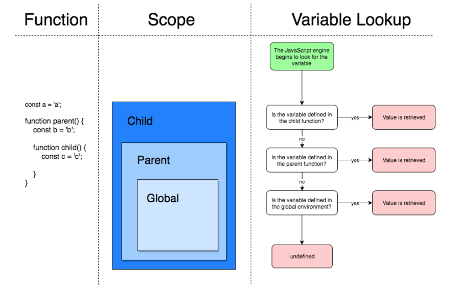

存储在变量中(函数表达式)
从一个函数返回
返回另一个函数的函数 或 接受其他函数作为参数的函数 被称为高阶函数
function alertThenReturn() {
alert('Message 1!');
return function () {
alert('Message 2!');
};
}
const innerFunction = alertThenReturn();
alertThenReturn(); // 显示 'Message 2!'
innerFunction(); //显示 'Message 2!'
alertThenReturn()(); //显示 'Message 1!' 然后显示 'Message 2!'块作用域和函数作用域称为词法作用域
函数的参数
函数内声明的本地变量
父函数作用域内声明的变量
ES6用let 和 const 关键字实现块级作用域
var x = 10;
// 这里输出 x 为 10
{
let x = 2;
// 这里输出 x 为 2
}
// 这里输出 x 为 10通过let声明的变量直到他们的定义被执行时才初始化，在初始化前访问该变量会导致ReferenceError.
该变量处在自顶部到初始化处理的暂存死区。
如以下代码中的ReferenceError
function do_something() {
console.log(bar); // undefined
console.log(foo); // ReferenceError
var bar = 1;
let foo = 2;
}用var关键字声明的变量不具备块级作用域的特性，在{ }外依然能被访问到
var x = 10;
// 这里输出 x 为 10
{
var x = 2;
// 这里输出 x 为 2
}
// 这里输出 x 为 2var globalNumber = 5;
function globalIncrementer() {
const localNumber = 10;
globalNumber += 1;
return globalNumber;
}
console.log(globalIncrementer()); // 6
console.log(globalIncrementer()); // 7
console.log(globalIncrementer()); // 8
console.log(localNumber); // ReferenceError: localNumber is not defined
// 这里localNumber在log函数的外部，因为无法取到localNumber的值，const定义的块级作用域
创建的变量与作用域中的另一个变量具有相同名称时，局部作用域的变量会shadow外部作用域中的变量
var money = '￥';
function myMoney() {
var money = '$';
console.log(money);
}
myMoney();
console.log(money);function makeFunc() {
var name = 'count';
function func2() {
console.log(name);
}
return func2;
}
var output = makeFunc();
output(); // 'count'标识符是指用来标识某个实体的一个符号，在不同的应用环境下有不同的含义。在编程语言中，标识符是用户编程时使用的名字，用于给变量、常量、函数、语句块等命名，以建立起名称与使用之间的关系。
当使用标识符时，作用域链将被检查，以检索标识符的值。作用域链对于函数访问代码中的标识符来说非常强大的工具。